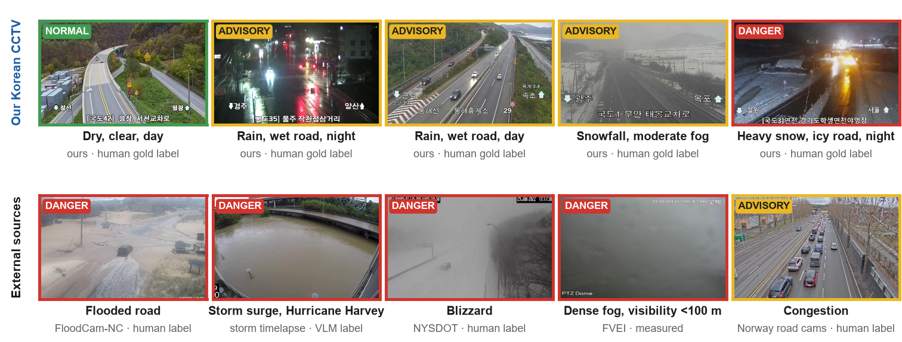
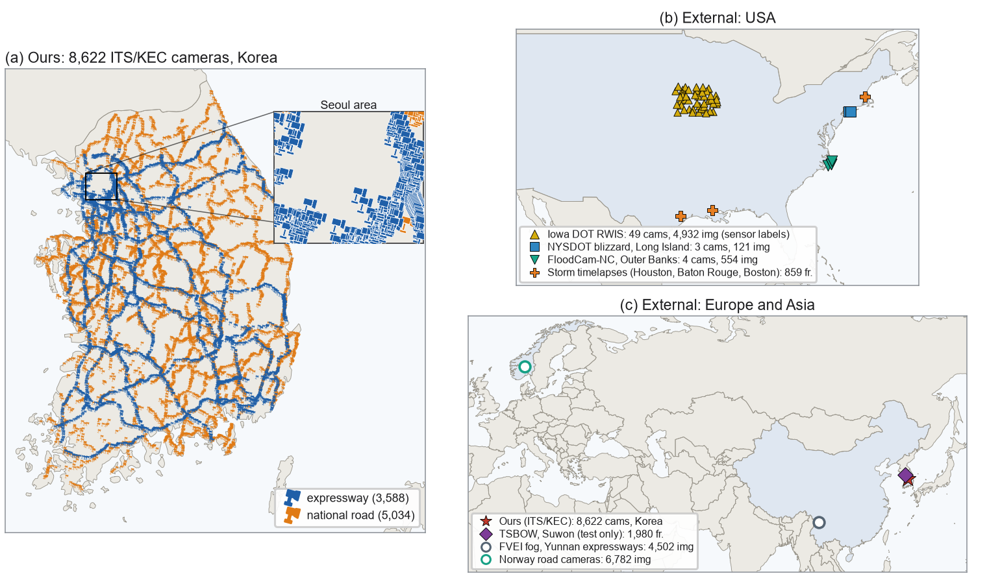
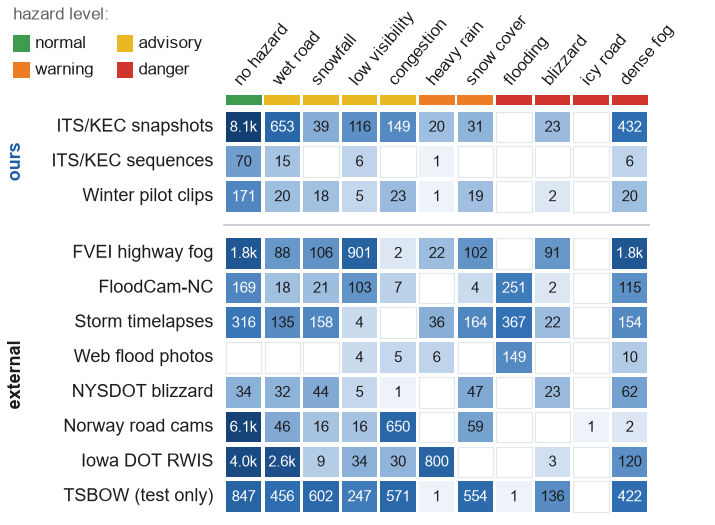
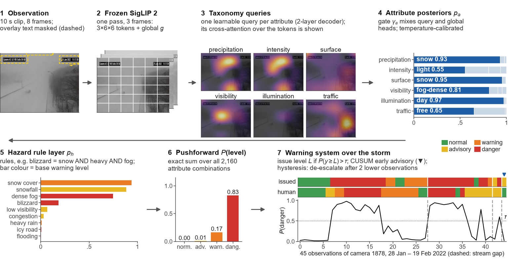
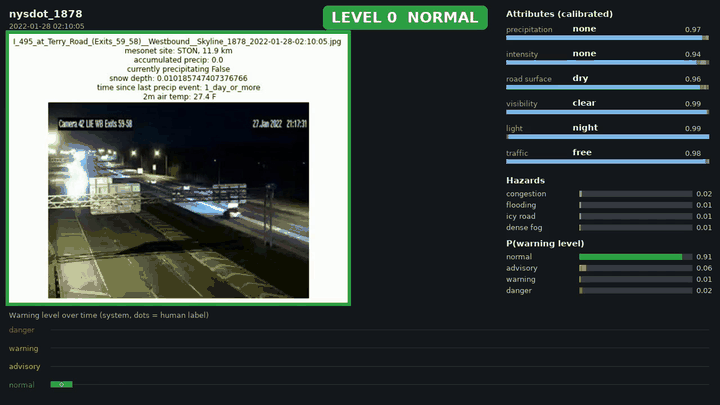
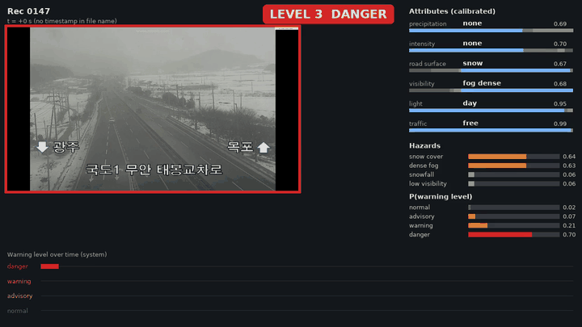
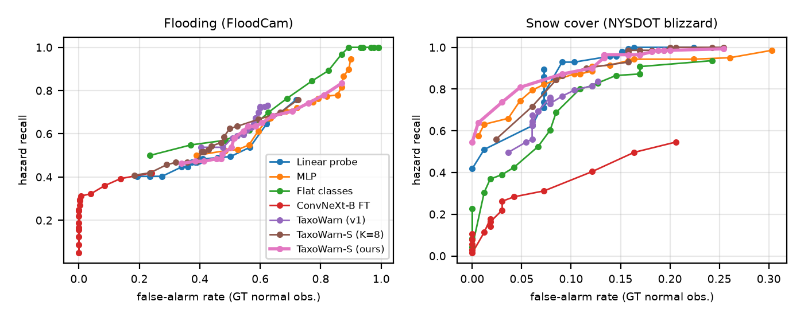

A Taxonomy-Grounded Benchmark and Early-Warning System for Road Weather Hazards from Roadside CCTV
Anonymous submission

Roadside CCTV cameras watch almost every kilometre of modern highways, yet they are rarely used to warn drivers about weather hazards. We introduce HighwayMM, a benchmark for road-weather hazard recognition and early warning from fixed roadside cameras. HighwayMM pairs 9,031 clips from 8,622 Korean expressway and national-road cameras with seven external sources, selected to fill its seasonal and hazard gaps: highway fog, coastal road flooding, a blizzard, hurricane and storm-surge timelapses, Nordic road cameras, and summer storms from roadside weather-station cameras with sensor-derived labels. All sources are harmonised under a unified hazard taxonomy, in which six observable attributes determine nine hazard types and four warning levels. The benchmark comes with overlay-masked inputs, camera-disjoint and cross-source splits, test sets with human or sensor labels, and a human-labelled gold set of our own footage.
We show that taxonomy-factorised supervision is essential: learning the same data as flat weather classes loses more than 10 points. A prompted 7B vision-language model fails exactly on the rare hazards, missing floods and confusing fog grades. On eight external test sets, simple probes on frozen vision-language features with an exact taxonomy pushforward to warning levels outperform a fine-tuned ConvNeXt (+5.0) and Qwen2.5-VL-7B (+16.0), and our interpretable taxonomy-query model TaxoWarn-S is competitive but not better: data coverage, not architecture, drives accuracy. The gold set exposes the open problem: on our own cameras, every model only matches the VLM whose pseudo-labels it was trained on (46–47 attribute F1). Our early-warning system detects snow cover through an unseen blizzard at 85% recall with 0.03 false alarms per camera-day and serves about 1,000 cameras per GPU. Flooding on unseen cameras and Korean night-time precipitation remain open challenges.

Test sets use human, physics or sensor labels only. Splits are disjoint by camera and by time.

Datasets labelled with different flat classes cannot be merged. HighwayMM maps every source to six observable attributes; hazards and warning levels are derived by rules and never labelled directly. Each source labels only what it observes, and every label records its provenance (human, physics, sensor or VLM).
The warning level is the exact pushforward of the six attribute posteriors through the rules, a sum over all 2,160 attribute combinations that takes under 0.1 ms per item. It inherits the calibration of the attribute heads and cannot contradict them.

Per-attribute attention on more scenes: query attention maps. The queries separate on some scenes, such as this blizzard, and attend to similar regions on others.
| Model (frozen SigLIP 2 features unless noted) | 8 external tests GT-mean | Warning F1 | Gold set (ours) attribute F1 |
|---|---|---|---|
| SigLIP 2 zero-shot | 60.7 | 29.1 | n/a |
| Qwen2.5-VL-7B, prompted (also our pseudo-labeller) | 64.7 | 63.0 | 47.0 |
| Flat weather classes | 69.1 | 54.1 | 43.3 |
| ConvNeXt-B, fine-tuned end to end | 75.7 | 57.6 | 40.4 |
| Linear probe + taxonomy pushforward | 79.2 | 64.9 | 44.4 |
| MLP probe + taxonomy pushforward | 80.7 | 66.8 | 46.2 |
| MLP probe + object-detection descriptors | 81.1 | 65.1 | 46.9 |
| TaxoWarn-S (taxonomy-query model) | 79.8 | 64.4 | 43.0 |
Means over 3 seeds. Full tables with standard deviations are in the paper and the code repository.
The same data learned as flat weather classes loses more than 10 points; fog F1 drops from about 92 to 35.
Qwen2.5-VL-7B is near chance on flooding (48.5 AUROC) and collapses fog grades (39.8 F1).
Our footage alone gives 64.1 GT-mean, external data alone 73.7. Removing the summer source drops wet-road AUROC from 87.2 to 75.7.
On our own cameras every trained model only matches its VLM pseudo-labeller (46–47 F1). Night-time "snow" is mostly rain seen by infrared cameras; flooding on unseen cameras stays at AUROC ≤ 64.
The replay demo runs the complete pipeline on video or image files as if they were arriving live: frames → overlay masking → SigLIP 2 → TaxoWarn-S → thresholds, early advisory and hysteresis. Run on the held-out cameras with the paper's operating points, it reproduces the paper's warning numbers.



| Part | Release |
|---|---|
| Our ITS / KEC snapshots and pilot clips | Overlay-masked frames, metadata, labels with per-attribute provenance, features |
| Gold labels and hazard-mining audit | With the dataset |
| NYSDOT 511NY (CC BY 4.0), FloodCam-NC, Pixabay flood images | Redistributed with attribution |
| FVEI, V-FloodNet, Norway road cameras, Iowa DOT RWIS, TSBOW | Item IDs plus download and preprocessing scripts only |
The code repository contains the data pipeline, the TaxoWarn-S model, training and evaluation, the early-warning system and replay demo, and the generators for every table and figure in the paper. Code is MIT-licensed; each data source keeps its own licence.
@inproceedings{highwaymm,
title = {HighwayMM: A Taxonomy-Grounded Benchmark and Early-Warning System for Road Weather Hazards from Roadside CCTV},
author = {Anonymous},
booktitle = {Under review}
}